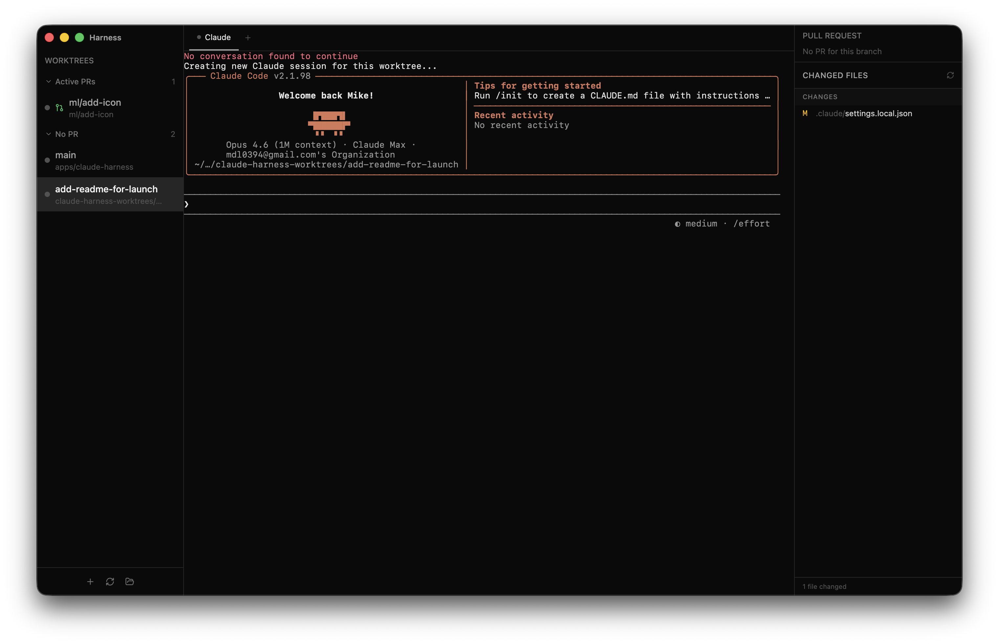

Wrangle all
your agents.
Run ten Claudes at once without losing your mind. Ship more, faster, with every session at your fingertips.
Free · Open source
Run ten Claudes at once without losing your mind. Ship more, faster, with every session at your fingertips.
Free · Open source

The way you wish your terminal could handle ten Claudes at once.
Each worktree's sidebar dot tells you exactly what Claude is doing — working, waiting for input, or asking permission. Powered by Claude Code hooks, not flaky output parsing.
Create and delete git worktrees from the sidebar. Each worktree gets its own terminal tabs (Claude + raw shells) and remembers your state.
See PR state and CI checks for every worktree at a glance. Cmd+Shift+G opens the PR in your browser. Sorted by what needs your attention.
A changed-files panel sits next to the terminal so you can review what Claude changed without leaving the app. Click any file to open a diff tab.
Cmd+1-9 to jump between worktrees. Cmd+T for a new shell. Cmd+W to close. Cmd+B to hide the sidebar. All rebindable in Settings.
Pick your Mac architecture. Drag the app to Applications, launch, and you're done.
claude CLI installed and git on your PATH.